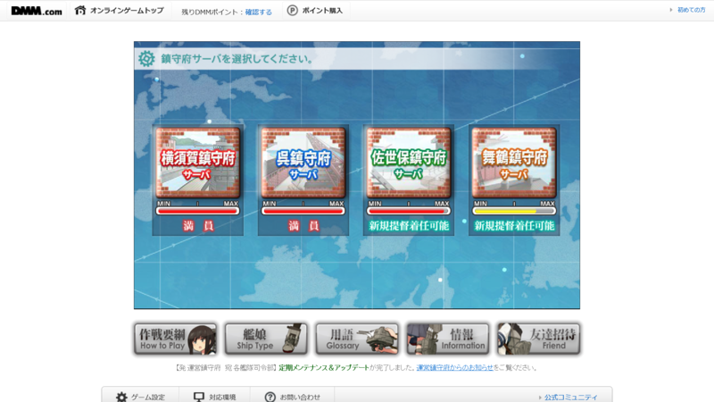
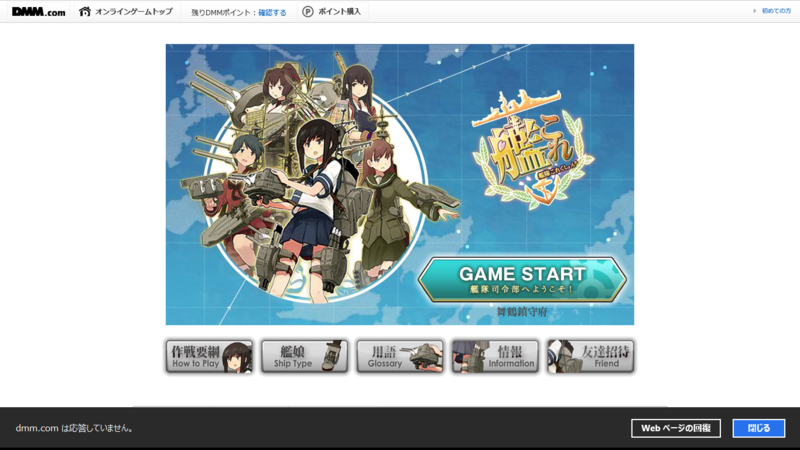
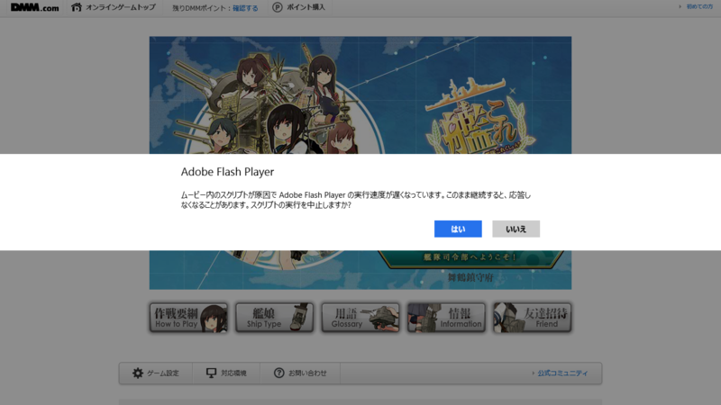
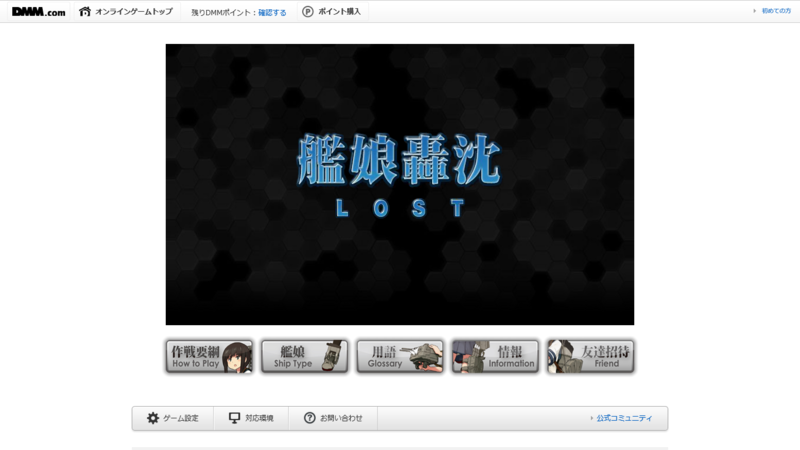
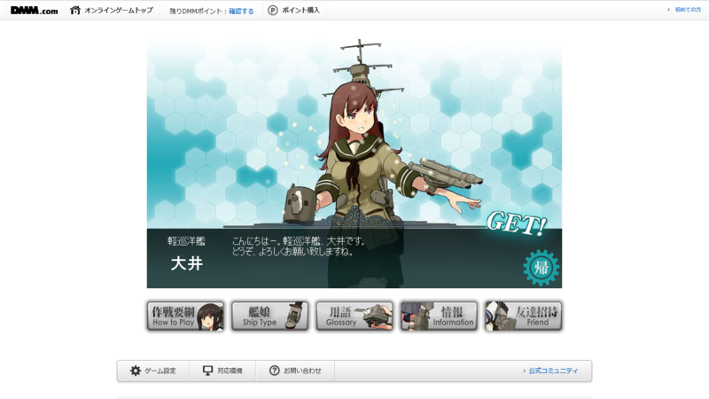

Surface RT で「艦これ」始めた
公開日：

「艦隊これくしょん -艦これ-」は、駆逐艦、軽巡洋艦、重巡洋艦、水上機母艦、戦艦、航空母艦などを擬人化した艦艇娘「艦娘」（かんむす）を収集・育成・編成して、自分だけの無敵連合艦隊を作り上げていく、艦隊育成型シミュレーションゲーム。艦娘の数は100隻以上用意されているという。艦娘は出撃や演習で得られる経験値でレベルアップしていく。また、改装で武装や艦載機などの装備を搭載し強化することもできる。
というわけで、舞鶴鎮守府へ舞い降りた。暁の水平線に勝利を刻むのだ！
最初は娘をあつめて「うちの娘、かわいい (^q^)」と喜び、被弾して服が破れては「なんとエロい (^q^)」と涎していたのだけれど、だんだん娘たちが育ってきて思い入れが強くなってくると、「おめぇ、オレの娘になにさらしとんじゃ (#ﾟДﾟ)ｺﾞﾙｧ!!」とマジギレモードに。改修に必要な資源が足りなくなっては「満足に服も与えてやれないとは ｡ﾟ(ﾟ´Д｀ﾟ)ﾟ｡」と不甲斐なく思う。油の一滴、鉄の一欠片に涙し、今日もまた娘たちが無事でいることに感謝する――そんなゲームです。
まぁ、所謂ガチャゲーになるのかもだけど。最近のスマフォのゲームはよくわからん。基本的にお金はかからないが、資材やアイテムを買うと戦闘やクエスト挑戦までの待ち時間が短縮されるので、廃人になれば多少お金は食うと思う。DMM.com にクレジットカード情報を捧げれば、最初の 500 ポイントはただで貰えるが、クレカ情報が流出したときに「こいつ、DMM.com でエロビデオで買ってたのか」と思われるおそれがあるので多少は考えたほうがいいかもしれない。自分は今回はじめて ID とクレカの登録をした（死
さて、「艦これ」は Flash ゲームなので、Windows RT でも遊べる。ただし、ちょっとだけ気をつけなければならないところもあるようだ。

まず、ゲームのロード処理が若干重い。ロード中にあちこち触ってると「dmm.com は応答していません」というダイアログが出るけれど、［Web ページの回復］ボタンを押さずに少し待とう。

あんまりあちこち触りすぎると逆に事態が悪化する。じっと我慢すれば、［GAME START］のボタンが押せるようになる。まぁ、何回かやれば、そのうちタイミングがつかめてくる。
それさえクリアすれば、あとは案外快適。バックグラウンドプロセスが走ったりするとだいぶ重くなるが、まぁ、我慢できない程でもない。
追記

我が艦隊のエース級軽巡洋艦・大井ちゃんが憎き敵艦隊の毒牙にかかり轟沈。キャラクターをロストしてしまった……。

（生前の大井さん）
大井さんがいたはずの艦隊のスロットに、「NO DATA」と書かれているのを眺めながら、しばし呆然としてしまった。もう、世を捨てて坊さんになりたい気分だ。
追記2
デスクトップで艦これすると、Surface RT よりめっちゃさくさく進むｗ
Surface RT で艦隊戦をするとひとりひとりのセリフがかぶらず、のんびりした雰囲気なのだけど、スペックの高いデスクトップだとセリフと効果音が複数入り交じって賑やかな感じ。
やっぱりスペックの差は埋めがたいか。ただ、Surface Pro だと布団でゲームすると熱くて寝られないので、やっぱり Surface RT の方がいい。